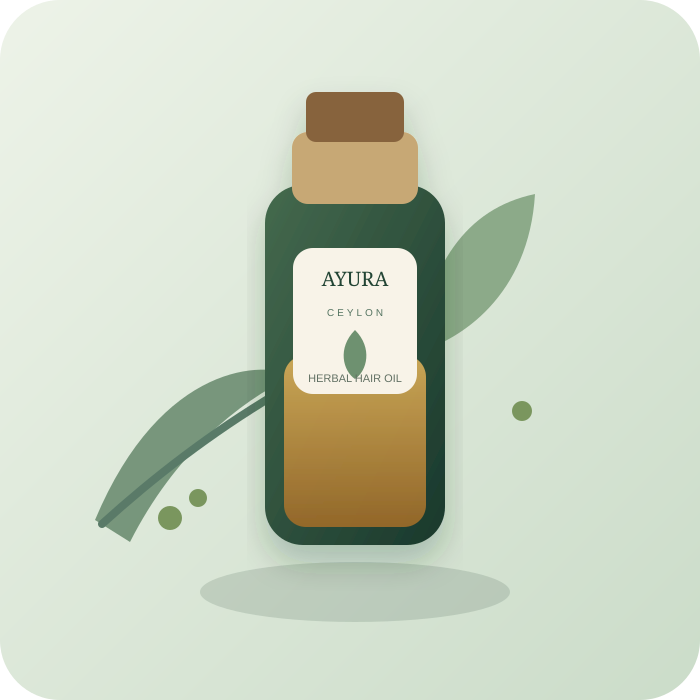
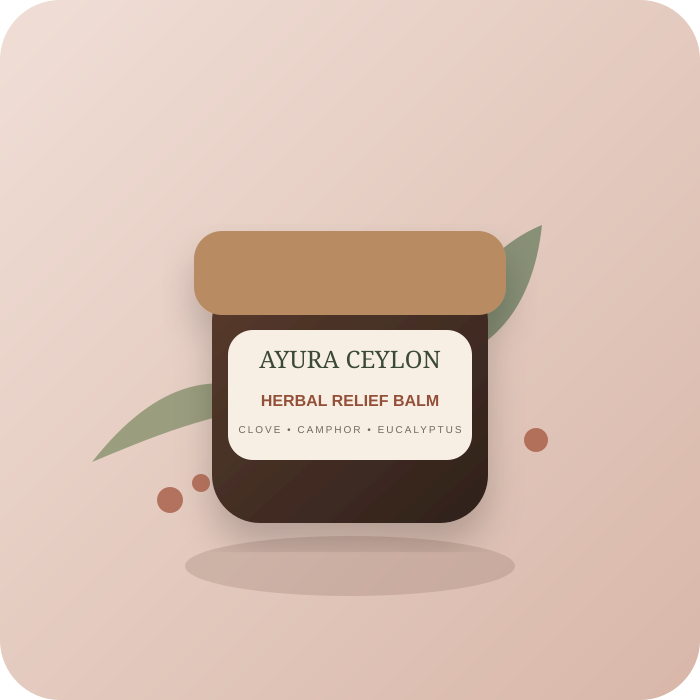
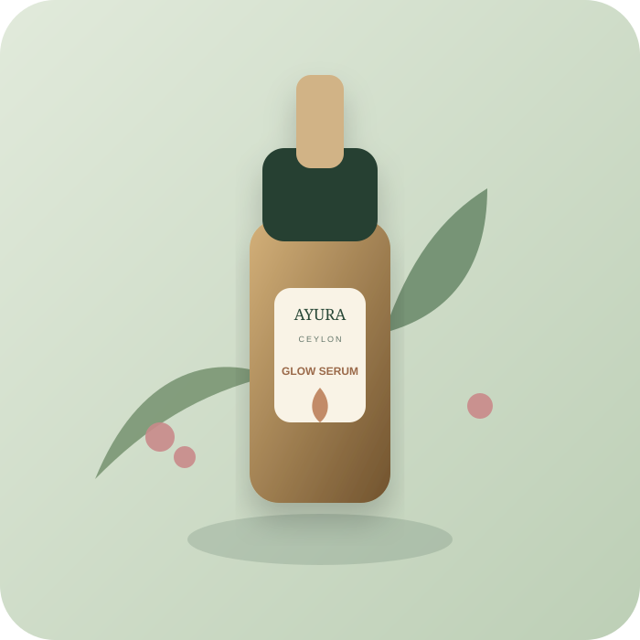
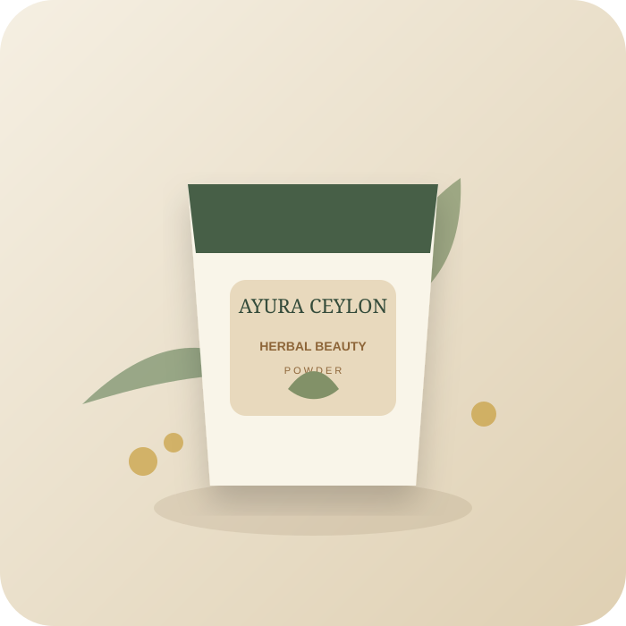
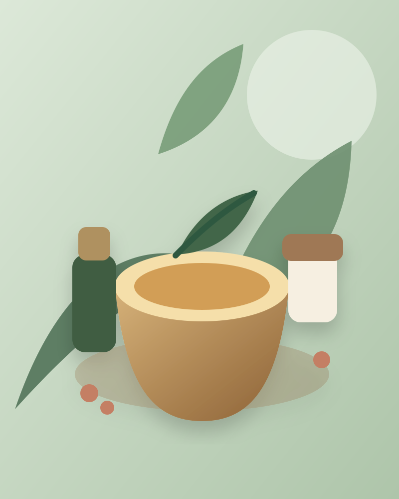

වැඩිම අලෙවි
WhatsApp ඇණවුම
ඖෂධීය කේශ තෙල්
නෙල්ලි, කොහොඹ සහ පොල්තෙල් වලින් සකස් කළ කෙස් මුල් ශක්තිමත් කරන පෝෂණීය මිශ්රණයකි.
රු. 2,490100ml
දේශීය ඖෂධීය ශාක, පාරම්පරික දැනුම සහ නවීන නිෂ්පාදන ක්රම එකට එක්කර නිර්මාණය කළ, ශරීරයටත් මනසටත් සුවය ගෙනෙන සත්කාර එකතුවක්.
500+ සතුටුදායක පාරිභෝගිකයින්

ස්වභාවික සත්කාර එකතුව
සරල සංයෝග. තෝරාගත් ඖෂධීය ශාක. ඔබේ රූපලාවණ්යය, සුවතාව සහ දෛනික සුවපහසුව සඳහා විශ්වාසයෙන් භාවිත කළ හැකි නිෂ්පාදන.
නෙල්ලි, කොහොඹ සහ පොල්තෙල් වලින් සකස් කළ කෙස් මුල් ශක්තිමත් කරන පෝෂණීය මිශ්රණයකි.
කොත්තමල්ලි, ඉඟුරු, කුරුඳු සහ දේශීය ඖෂධීය ශාක එකතුවෙන් සැකසූ උණුසුම් පානයකි.

WhatsApp ඇණවුමකරාබුනැටි, යුකැලිප්ටස් සහ කපුරු සාරයෙන් සකස් කළ දෛනික සුවපහසුව සඳහා සුදුසු බාම් එකකි.

WhatsApp ඇණවුමකුංකුම, රෝස සහ කෝමාරිකා සාරයෙන් සමට තෙතමනය සහ ස්වභාවික දිදුලීම ලබාදෙන සැහැල්ලු සීරම් එකකි.

WhatsApp ඇණවුමසුදු හඳුන්, කහ සහ මුං ඇට වලින් සම පිරිසිදු කර මෘදු බව ලබාදෙන පාරම්පරික සත්කාරයකි.
දිගු දිනක අවසානයේ ශරීරයට සහ මනසට සන්සුන් බවක් ලබාදීමට නිර්මාණය කළ සුවඳැති තෙල් මිශ්රණයකි.

“සුවධරා” හි අපගේ අරමුණ වන්නේ පරම්පරා ගණනාවක් පුරා පැවති දේශීය ඖෂධීය දැනුම, නවීන ජීවන රටාවට පහසුවෙන් එක් කළ හැකි සරල සහ විශ්වාසදායක නිෂ්පාදන බවට පත් කිරීමයි.
තෝරාගත් අමුද්රව්ය ගුණාත්මක බව සහ දෛනික භාවිතයට සුදුසු බව සලකා තෝරාගනී.
කුඩා ප්රමාණයෙන් නිෂ්පාදනය සෑම නිෂ්පාදනයකටම අවධානය සහ ස්ථාවර ගුණාත්මක බව ලබාදේ.
නවීන සුවතා අත්දැකීම පිරිසිදු ඇසුරුම් සහ පහසු භාවිතය සමඟ ඔබ වෙත.
නිෂ්පාදනයේ සිට ඔබේ අතට ලැබෙන තෙක්, ගුණාත්මක බව සහ පාරිභෝගික සුවපහසුව අපගේ ප්රමුඛතාවයයි.
තෝරාගත් දේශීය ඖෂධීය ශාක සහ ස්වභාවික තෙල් පමණි.
නැවුම් බව සහ ස්ථාවර ගුණාත්මක බව රැකෙන ලෙස නිෂ්පාදනය කරයි.
දෛනික සත්කාර චාරිත්රයකට පහසුවෙන් එක් කළ හැකි සංයෝග.
ආරක්ෂිත ඇසුරුම් සමඟ ඉක්මන් සහ විශ්වාසදායක බෙදාහැරීම.
“කේශ තෙල් එක සති කිහිපයක් භාවිත කළාට පස්සේ කෙස් වියළි ගතිය අඩු වුණා. සුවඳත් හරිම ස්වභාවිකයි. නැවතත් ගන්නවා.”
“මසාජ් තෙල් එක සවස භාවිත කළාම හොඳ සන්සුන් බවක් දැනෙනවා. ඇසුරුමත් delivery service එකත් ඉතා professional.”
තවත් විස්තර අවශ්ය නම් WhatsApp හරහා අප සමඟ සම්බන්ධ වන්න.
අපගේ නිෂ්පාදන තෝරාගත් ස්වභාවික අමුද්රව්ය සහ දේශීය ඖෂධීය ශාක යොදා සකස් කරයි. එක් එක් නිෂ්පාදනයේ සම්පූර්ණ අමුද්රව්ය ලැයිස්තුව ලබාගත හැක.
සාමාන්යයෙන් කොළඹ සහ අවට ප්රදේශ සඳහා වැඩකරන දින 1–2ක්ද, අනෙකුත් ප්රදේශ සඳහා වැඩකරන දින 2–4ක්ද ගතවේ.
ඔව්. තෝරාගත් ප්රදේශ සඳහා Cash on Delivery සහ බැංකු තැන්පතු යන ගෙවීම් ක්රම දෙකම ලබාගත හැක.
ඔව්. ඔබගේ අවශ්යතාවය WhatsApp හරහා අපට කියන්න. සුදුසු නිෂ්පාදනය තෝරාගැනීමට සාමාන්ය මාර්ගෝපදේශ ලබාදෙන්නෙමු.
නිෂ්පාදන, මිල ගණන්, delivery සහ ඔබට සුදුසු සත්කාරය පිළිබඳ වැඩි විස්තර සඳහා WhatsApp හරහා අපට පණිවිඩයක් එවන්න.